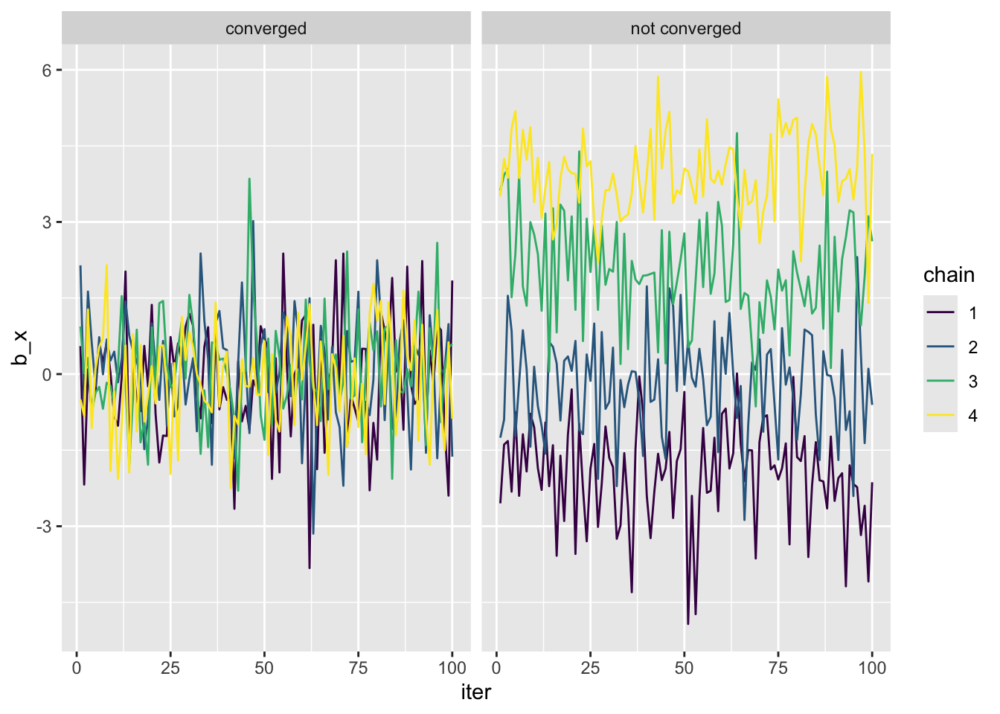
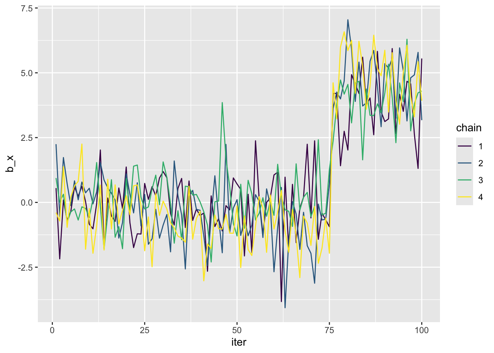
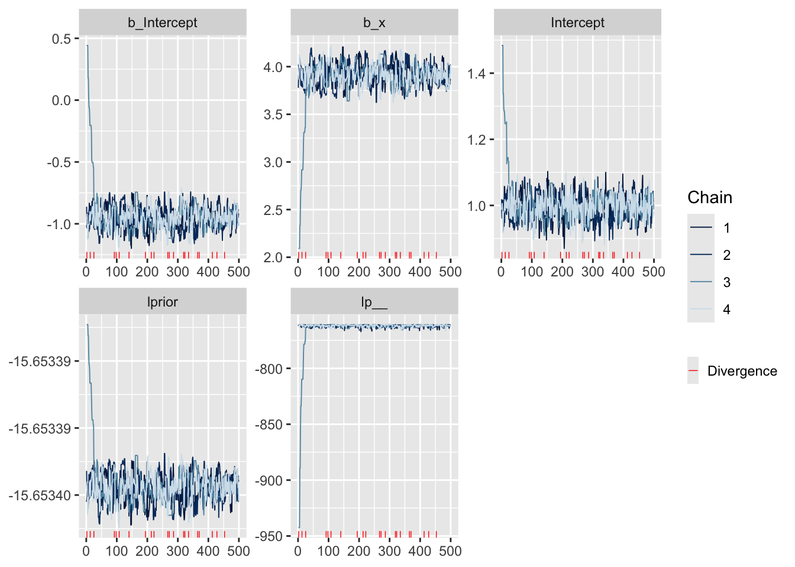
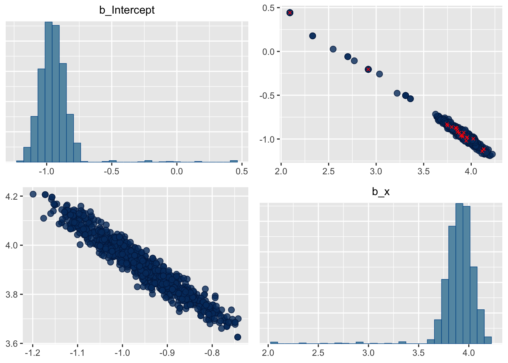

# set seed so we all have the same data
set.seed(123)
# random numeric data for explanatory variable
x <- runif(400, 0, 1)
# log(m) is the link function so mu = exp(...)
mu <- exp(-1 + 4 * x)
# draw random Poisson data based on mu responding to x
y <- rpois(length(x), mu)
# combine in one data object
dat <- data.frame(x, y)33 Basics of Bayesian inference
This lab will guide you through an introduction to using brms for Bayesian model inference. You can download the template .qmd file for this lab here:
The template will prompt you to work through the following sections.
33.1 Simulating a familiar model
We’ll start by simulating a simple and familiar GLM: a Poisson response variable responding to a single numeric explanatory variable.
Use ggplot to visualize these data.
33.2 A quick start guide to Bayesian inference with brms
The brms package lets estimate posteriors in a way that looks very similar to how we fit GLMs with maximum likelihood using the glm function. The workhorse function of brms is brm which takes forumal, data, and family arguments just like glm. But brm can take many additional arguments that are specific to Bayesian MCMC. Three especially important Bayesian MCMC arguments are prior, iter, and warmup. These all have meaningful defaults (so brm will run without specifying values for these arguments) but we should understand them so we can evaluate when to use or not use the defaults.
First we build a model
m_500 <- brm(y ~ x, data = dat,
# note: by convention the family gets `()`
family = poisson(),
prior = c(prior(normal(0, 1000), class = Intercept),
prior(normal(0, 1000), class = b)),
iter = 1000,
warmup = 500)Compiling Stan program...Trying to compile a simple C fileRunning /Library/Frameworks/R.framework/Resources/bin/R CMD SHLIB foo.c
using C compiler: ‘Apple clang version 16.0.0 (clang-1600.0.26.6)’
using SDK: ‘MacOSX15.2.sdk’
clang -arch arm64 -std=gnu2x -I"/Library/Frameworks/R.framework/Resources/include" -DNDEBUG -I"/Library/Frameworks/R.framework/Versions/4.5-arm64/Resources/library/Rcpp/include/" -I"/Library/Frameworks/R.framework/Versions/4.5-arm64/Resources/library/RcppEigen/include/" -I"/Library/Frameworks/R.framework/Versions/4.5-arm64/Resources/library/RcppEigen/include/unsupported" -I"/Library/Frameworks/R.framework/Versions/4.5-arm64/Resources/library/BH/include" -I"/Library/Frameworks/R.framework/Versions/4.5-arm64/Resources/library/StanHeaders/include/src/" -I"/Library/Frameworks/R.framework/Versions/4.5-arm64/Resources/library/StanHeaders/include/" -I"/Library/Frameworks/R.framework/Versions/4.5-arm64/Resources/library/RcppParallel/include/" -I"/Library/Frameworks/R.framework/Versions/4.5-arm64/Resources/library/rstan/include" -DEIGEN_NO_DEBUG -DBOOST_DISABLE_ASSERTS -DBOOST_PENDING_INTEGER_LOG2_HPP -DSTAN_THREADS -DUSE_STANC3 -DSTRICT_R_HEADERS -DBOOST_PHOENIX_NO_VARIADIC_EXPRESSION -D_HAS_AUTO_PTR_ETC=0 -include '/Library/Frameworks/R.framework/Versions/4.5-arm64/Resources/library/StanHeaders/include/stan/math/prim/fun/Eigen.hpp' -D_REENTRANT -DRCPP_PARALLEL_USE_TBB=1 -I/opt/R/arm64/include -fPIC -falign-functions=64 -Wall -g -O2 -c foo.c -o foo.o
In file included from <built-in>:1:
In file included from /Library/Frameworks/R.framework/Versions/4.5-arm64/Resources/library/StanHeaders/include/stan/math/prim/fun/Eigen.hpp:22:
In file included from /Library/Frameworks/R.framework/Versions/4.5-arm64/Resources/library/RcppEigen/include/Eigen/Dense:1:
In file included from /Library/Frameworks/R.framework/Versions/4.5-arm64/Resources/library/RcppEigen/include/Eigen/Core:19:
/Library/Frameworks/R.framework/Versions/4.5-arm64/Resources/library/RcppEigen/include/Eigen/src/Core/util/Macros.h:679:10: fatal error: 'cmath' file not found
679 | #include <cmath>
| ^~~~~~~
1 error generated.
make: *** [foo.o] Error 1Start sampling
SAMPLING FOR MODEL 'anon_model' NOW (CHAIN 1).
Chain 1:
Chain 1: Gradient evaluation took 2.4e-05 seconds
Chain 1: 1000 transitions using 10 leapfrog steps per transition would take 0.24 seconds.
Chain 1: Adjust your expectations accordingly!
Chain 1:
Chain 1:
Chain 1: Iteration: 1 / 1000 [ 0%] (Warmup)
Chain 1: Iteration: 100 / 1000 [ 10%] (Warmup)
Chain 1: Iteration: 200 / 1000 [ 20%] (Warmup)
Chain 1: Iteration: 300 / 1000 [ 30%] (Warmup)
Chain 1: Iteration: 400 / 1000 [ 40%] (Warmup)
Chain 1: Iteration: 500 / 1000 [ 50%] (Warmup)
Chain 1: Iteration: 501 / 1000 [ 50%] (Sampling)
Chain 1: Iteration: 600 / 1000 [ 60%] (Sampling)
Chain 1: Iteration: 700 / 1000 [ 70%] (Sampling)
Chain 1: Iteration: 800 / 1000 [ 80%] (Sampling)
Chain 1: Iteration: 900 / 1000 [ 90%] (Sampling)
Chain 1: Iteration: 1000 / 1000 [100%] (Sampling)
Chain 1:
Chain 1: Elapsed Time: 0.023 seconds (Warm-up)
Chain 1: 0.021 seconds (Sampling)
Chain 1: 0.044 seconds (Total)
Chain 1:
SAMPLING FOR MODEL 'anon_model' NOW (CHAIN 2).
Chain 2:
Chain 2: Gradient evaluation took 6e-06 seconds
Chain 2: 1000 transitions using 10 leapfrog steps per transition would take 0.06 seconds.
Chain 2: Adjust your expectations accordingly!
Chain 2:
Chain 2:
Chain 2: Iteration: 1 / 1000 [ 0%] (Warmup)
Chain 2: Iteration: 100 / 1000 [ 10%] (Warmup)
Chain 2: Iteration: 200 / 1000 [ 20%] (Warmup)
Chain 2: Iteration: 300 / 1000 [ 30%] (Warmup)
Chain 2: Iteration: 400 / 1000 [ 40%] (Warmup)
Chain 2: Iteration: 500 / 1000 [ 50%] (Warmup)
Chain 2: Iteration: 501 / 1000 [ 50%] (Sampling)
Chain 2: Iteration: 600 / 1000 [ 60%] (Sampling)
Chain 2: Iteration: 700 / 1000 [ 70%] (Sampling)
Chain 2: Iteration: 800 / 1000 [ 80%] (Sampling)
Chain 2: Iteration: 900 / 1000 [ 90%] (Sampling)
Chain 2: Iteration: 1000 / 1000 [100%] (Sampling)
Chain 2:
Chain 2: Elapsed Time: 0.022 seconds (Warm-up)
Chain 2: 0.02 seconds (Sampling)
Chain 2: 0.042 seconds (Total)
Chain 2:
SAMPLING FOR MODEL 'anon_model' NOW (CHAIN 3).
Chain 3:
Chain 3: Gradient evaluation took 6e-06 seconds
Chain 3: 1000 transitions using 10 leapfrog steps per transition would take 0.06 seconds.
Chain 3: Adjust your expectations accordingly!
Chain 3:
Chain 3:
Chain 3: Iteration: 1 / 1000 [ 0%] (Warmup)
Chain 3: Iteration: 100 / 1000 [ 10%] (Warmup)
Chain 3: Iteration: 200 / 1000 [ 20%] (Warmup)
Chain 3: Iteration: 300 / 1000 [ 30%] (Warmup)
Chain 3: Iteration: 400 / 1000 [ 40%] (Warmup)
Chain 3: Iteration: 500 / 1000 [ 50%] (Warmup)
Chain 3: Iteration: 501 / 1000 [ 50%] (Sampling)
Chain 3: Iteration: 600 / 1000 [ 60%] (Sampling)
Chain 3: Iteration: 700 / 1000 [ 70%] (Sampling)
Chain 3: Iteration: 800 / 1000 [ 80%] (Sampling)
Chain 3: Iteration: 900 / 1000 [ 90%] (Sampling)
Chain 3: Iteration: 1000 / 1000 [100%] (Sampling)
Chain 3:
Chain 3: Elapsed Time: 0.021 seconds (Warm-up)
Chain 3: 0.019 seconds (Sampling)
Chain 3: 0.04 seconds (Total)
Chain 3:
SAMPLING FOR MODEL 'anon_model' NOW (CHAIN 4).
Chain 4:
Chain 4: Gradient evaluation took 5e-06 seconds
Chain 4: 1000 transitions using 10 leapfrog steps per transition would take 0.05 seconds.
Chain 4: Adjust your expectations accordingly!
Chain 4:
Chain 4:
Chain 4: Iteration: 1 / 1000 [ 0%] (Warmup)
Chain 4: Iteration: 100 / 1000 [ 10%] (Warmup)
Chain 4: Iteration: 200 / 1000 [ 20%] (Warmup)
Chain 4: Iteration: 300 / 1000 [ 30%] (Warmup)
Chain 4: Iteration: 400 / 1000 [ 40%] (Warmup)
Chain 4: Iteration: 500 / 1000 [ 50%] (Warmup)
Chain 4: Iteration: 501 / 1000 [ 50%] (Sampling)
Chain 4: Iteration: 600 / 1000 [ 60%] (Sampling)
Chain 4: Iteration: 700 / 1000 [ 70%] (Sampling)
Chain 4: Iteration: 800 / 1000 [ 80%] (Sampling)
Chain 4: Iteration: 900 / 1000 [ 90%] (Sampling)
Chain 4: Iteration: 1000 / 1000 [100%] (Sampling)
Chain 4:
Chain 4: Elapsed Time: 0.021 seconds (Warm-up)
Chain 4: 0.02 seconds (Sampling)
Chain 4: 0.041 seconds (Total)
Chain 4: Something you’ll notice is that there is more printed output while the function is running, and it takes much longer to run compared to glm. The output mentions Chain 1, …, Chain 4. By default the MCMC under the hood of brm runs 4 times. We’ll get into why in the next section.
First, let’s investigate prior, iter, and warmup.
The argument iter tells brm how many total iterations of the No-U-Turns Hamiltonian MC to run. The warmup specifies how many of those iterations to use as a “warm-up,” meaning finding the right fine tuning of the NUTS HMC. The warm-up is always the first warmup number of iterations, and these warm-up iterations are not included in the final sample of the posterior. We used warmup = 500, thus the name of this model m_500.
We specify the prior for both Intercept and slope b as normal(0, 1000), meaning normal with mean = 0 and standard deviation = 1,000. In making the prior we need to indicate what parameter the prior is for with class. We use the special function normal rather than rnorm or dnorm because we are creating a prior and letting brm sample from it. But we can use rnorm to visualize what the prior looks like.
Use rnorm to draw 2,000 samples from a normal distribution with mean = 0 and standard deviation = 1,000, then visualize a two histograms, the first for just the values between -300 and +300, the second for all the randomly sampled values.
You should find that between -300 and +300 the prior is nearly flat. But over its full range it of course looks like a bell curve. Consider this: very large negative and positive numbers will almost never end up in our posterior sample, why?
Speaking of the posterior, let’s visualize it. First we can extract the posterior with as_draws_df
post_500 <- as_draws_df(m_500)
# have a look
post_500# A draws_df: 500 iterations, 4 chains, and 5 variables
b_Intercept b_x Intercept lprior lp__
1 -0.92 3.9 1.00 -16 -761
2 -0.96 3.9 0.99 -16 -761
3 -0.95 3.9 0.98 -16 -761
4 -0.95 3.9 1.00 -16 -761
5 -0.95 3.9 1.00 -16 -761
6 -1.05 4.1 0.96 -16 -762
7 -1.02 4.0 0.97 -16 -761
8 -1.02 3.9 0.95 -16 -762
9 -0.96 3.9 0.99 -16 -761
10 -0.96 3.9 0.98 -16 -761
# ... with 1990 more draws
# ... hidden reserved variables {'.chain', '.iteration', '.draw'}We have a data.frame type object with columns for b_Intercept and b_x, those are the intercept and slope parameters of our model. The other columns store additional information that we will not consider.
Because we ran 4 chains (4 separate MCMC’s) each with 500 post-warm-up iterations, we should have 4 * 500 = 2000 samples in post_500. Let’s confirm
nrow(post_500)[1] 2000Make a histogram of the posterior for the intercept b_Intercept and the slope b_x. Is the range of the posteriors consistent with the true intercept and slope we used to simulate the data (intercept = -1, slope = 4)? (side note: the bayesplot package offers function mcmc_hist which can more directly make a histogram of posteriors)
Now use mean and quantile on post_500 to calculate the estimate and 95% credible intervals for the intercept and slope. Compare to the output of fixef.
fixef(m_500) Estimate Est.Error Q2.5 Q97.5
Intercept -0.9630359 0.08395743 -1.125162 -0.8002164
x 3.9253919 0.10609808 3.719761 4.1294578Hint: for calculating 95% CI, use quantile with the probs argument set to c(0.025, 0.975). Here’s an example:
x <- rnorm(100)
quantile(x, probs = c(0.025, 0.975)) 2.5% 97.5%
-1.819025 1.748178 33.3 Diagnosing the success (or failure) or Bayesian MCMC
Bayesian MCMC is a lot more sensitive compared to maximizing the likelihood. If the MCMC does not run successfully, the posterior sample is not reliable. So it is very important that we diagnose whether the MCMC was successful. There are a few key metrics of success:
- did the MCMC converge (meaning did it find the region of parameter space where the posterior is highest)?
- did the MCMC produce sufficient samples?
- did the MCMC get stuck somewhere?
- specifically for NUTS: were there any “divergences”? (we’ll get into what that means)
The summary function provides some useful information
summary(m_500) Family: poisson
Links: mu = log
Formula: y ~ x
Data: dat (Number of observations: 400)
Draws: 4 chains, each with iter = 1000; warmup = 500; thin = 1;
total post-warmup draws = 2000
Regression Coefficients:
Estimate Est.Error l-95% CI u-95% CI Rhat Bulk_ESS Tail_ESS
Intercept -0.96 0.08 -1.13 -0.80 1.00 529 561
x 3.93 0.11 3.72 4.13 1.00 574 695
Draws were sampled using sampling(NUTS). For each parameter, Bulk_ESS
and Tail_ESS are effective sample size measures, and Rhat is the potential
scale reduction factor on split chains (at convergence, Rhat = 1).In addition to information about the parameter values (i.e. estimates, CI) we have two new pieces of information: Rhat (or \(\hat{R}\)) and ESS which stands for “effective sample size” (both Bulk and Tail).
\(\hat{R}\) is a useful measure of convergence. It quantifies the ratio of within-chain variance to the between chain variance. At convergence, this ratio should be 1. From the output of summary we see that it is indeed 1. Note: we get separate information for both Intercept and x (i.e. slope) because the shape of the posterior across different parameters can be different, leading to different outcomes despite all running in the same MCMC.
Effective sample size tells us what our sample size is accounting for potential autocorrelation of the samples produced by the MCMC. We ran the MCMC for 500 iterations post-warm-up, so we should aim for an EES of close to 500. The fact that our EES values and \(> 500\) is well known for the NUTS algorithm because its sampling method can produce negative autocorrelation.
EES is split into Bulk and Tail because Bulk tells us about the overall posterior distribution while Tail tells us specificlaly about the tails of the posterior. A common problem is having Tail_EES be much smaller than Bulk_EES. This indicates that the MCMC had difficulty sampling from the tails of the posterior.
33.3.1 Trace plots
Visual diagnostics are a mainstay of Bayesian MCMC. One of the most common visuals is the trace plot. The trace plot shows the timeseries of samples from the MCMC. It is a great visual way of confirming convergence. Here are two hypothetical trace plots
conv <- data.frame(iter = rep(1:100, 4),
chain = factor(rep(1:4, each = 100)),
b_x = rnorm(400),
convergence = "converged")
no_conv <- conv |>
mutate(b_x = rnorm(400) + 2 * as.numeric(chain) - 4,
convergence = "not converged")
b_x_conv <- rbind(conv, no_conv)
ggplot(b_x_conv, aes(iter, b_x, color = chain)) +
geom_line() +
facet_grid(cols = vars(convergence)) +
scale_color_viridis_d()
Load the bayesplot package and use function mcmc_trace to visualize the trace of m_500. Can we confirm convergence?
Another issue that trace plots can diagnose is a stuck MCMC. This happens when one or more chains gets stuck in a region (or regions) of parameter space. That might look something like
stuck <- conv |>
mutate(b_x = b_x + rep(c(0, 0, 0, rnorm(5, sd = 3)), each = 25))
ggplot(stuck, aes(iter, b_x, color = chain)) +
geom_line() +
scale_color_viridis_d()
Compared to the trace plot of the acutual model, did the MCMC get stuck?
33.3.2 Divergence
Divergence is a special concept for the NUTS and HMC algorithms. These algorithms try to simulate actual physics, but sometimes they get it wrong. Imagine if a kid kicked a ball but instead of rolling down a hill it just started floating. That would be a divergence. If divergences occur we cannot trust the posterior sample.
Our MCMC with 500 warm-up iterations did not encounter any divergence. But if we don’t allow the MCMC to properly warm up, divergences are increasingly likely. Let’s make a new model object from the same data and with 500 post-warm-up iterations, but with only 10 warm up steps and then see how we can evaluate divergence.
set.seed(1)
m_10 <- brm(y ~ x, data = dat,
family = poisson(),
prior = c(prior(normal(0, 1000), class = Intercept),
prior(normal(0, 1000), class = b)),
iter = 510,
warmup = 10)Compiling Stan program...Trying to compile a simple C fileRunning /Library/Frameworks/R.framework/Resources/bin/R CMD SHLIB foo.c
using C compiler: ‘Apple clang version 16.0.0 (clang-1600.0.26.6)’
using SDK: ‘MacOSX15.2.sdk’
clang -arch arm64 -std=gnu2x -I"/Library/Frameworks/R.framework/Resources/include" -DNDEBUG -I"/Library/Frameworks/R.framework/Versions/4.5-arm64/Resources/library/Rcpp/include/" -I"/Library/Frameworks/R.framework/Versions/4.5-arm64/Resources/library/RcppEigen/include/" -I"/Library/Frameworks/R.framework/Versions/4.5-arm64/Resources/library/RcppEigen/include/unsupported" -I"/Library/Frameworks/R.framework/Versions/4.5-arm64/Resources/library/BH/include" -I"/Library/Frameworks/R.framework/Versions/4.5-arm64/Resources/library/StanHeaders/include/src/" -I"/Library/Frameworks/R.framework/Versions/4.5-arm64/Resources/library/StanHeaders/include/" -I"/Library/Frameworks/R.framework/Versions/4.5-arm64/Resources/library/RcppParallel/include/" -I"/Library/Frameworks/R.framework/Versions/4.5-arm64/Resources/library/rstan/include" -DEIGEN_NO_DEBUG -DBOOST_DISABLE_ASSERTS -DBOOST_PENDING_INTEGER_LOG2_HPP -DSTAN_THREADS -DUSE_STANC3 -DSTRICT_R_HEADERS -DBOOST_PHOENIX_NO_VARIADIC_EXPRESSION -D_HAS_AUTO_PTR_ETC=0 -include '/Library/Frameworks/R.framework/Versions/4.5-arm64/Resources/library/StanHeaders/include/stan/math/prim/fun/Eigen.hpp' -D_REENTRANT -DRCPP_PARALLEL_USE_TBB=1 -I/opt/R/arm64/include -fPIC -falign-functions=64 -Wall -g -O2 -c foo.c -o foo.o
In file included from <built-in>:1:
In file included from /Library/Frameworks/R.framework/Versions/4.5-arm64/Resources/library/StanHeaders/include/stan/math/prim/fun/Eigen.hpp:22:
In file included from /Library/Frameworks/R.framework/Versions/4.5-arm64/Resources/library/RcppEigen/include/Eigen/Dense:1:
In file included from /Library/Frameworks/R.framework/Versions/4.5-arm64/Resources/library/RcppEigen/include/Eigen/Core:19:
/Library/Frameworks/R.framework/Versions/4.5-arm64/Resources/library/RcppEigen/include/Eigen/src/Core/util/Macros.h:679:10: fatal error: 'cmath' file not found
679 | #include <cmath>
| ^~~~~~~
1 error generated.
make: *** [foo.o] Error 1Start sampling
SAMPLING FOR MODEL 'anon_model' NOW (CHAIN 1).
Chain 1:
Chain 1: Gradient evaluation took 3.4e-05 seconds
Chain 1: 1000 transitions using 10 leapfrog steps per transition would take 0.34 seconds.
Chain 1: Adjust your expectations accordingly!
Chain 1:
Chain 1:
Chain 1: WARNING: No variance estimation is
Chain 1: performed for num_warmup < 20
Chain 1:
Chain 1: Iteration: 1 / 510 [ 0%] (Warmup)
Chain 1: Iteration: 11 / 510 [ 2%] (Sampling)
Chain 1: Iteration: 61 / 510 [ 11%] (Sampling)
Chain 1: Iteration: 112 / 510 [ 21%] (Sampling)
Chain 1: Iteration: 163 / 510 [ 31%] (Sampling)
Chain 1: Iteration: 214 / 510 [ 41%] (Sampling)
Chain 1: Iteration: 265 / 510 [ 51%] (Sampling)
Chain 1: Iteration: 316 / 510 [ 61%] (Sampling)
Chain 1: Iteration: 367 / 510 [ 71%] (Sampling)
Chain 1: Iteration: 418 / 510 [ 81%] (Sampling)
Chain 1: Iteration: 469 / 510 [ 91%] (Sampling)
Chain 1: Iteration: 510 / 510 [100%] (Sampling)
Chain 1:
Chain 1: Elapsed Time: 0 seconds (Warm-up)
Chain 1: 0.02 seconds (Sampling)
Chain 1: 0.02 seconds (Total)
Chain 1:
SAMPLING FOR MODEL 'anon_model' NOW (CHAIN 2).
Chain 2:
Chain 2: Gradient evaluation took 7e-06 seconds
Chain 2: 1000 transitions using 10 leapfrog steps per transition would take 0.07 seconds.
Chain 2: Adjust your expectations accordingly!
Chain 2:
Chain 2:
Chain 2: WARNING: No variance estimation is
Chain 2: performed for num_warmup < 20
Chain 2:
Chain 2: Iteration: 1 / 510 [ 0%] (Warmup)
Chain 2: Iteration: 11 / 510 [ 2%] (Sampling)
Chain 2: Iteration: 61 / 510 [ 11%] (Sampling)
Chain 2: Iteration: 112 / 510 [ 21%] (Sampling)
Chain 2: Iteration: 163 / 510 [ 31%] (Sampling)
Chain 2: Iteration: 214 / 510 [ 41%] (Sampling)
Chain 2: Iteration: 265 / 510 [ 51%] (Sampling)
Chain 2: Iteration: 316 / 510 [ 61%] (Sampling)
Chain 2: Iteration: 367 / 510 [ 71%] (Sampling)
Chain 2: Iteration: 418 / 510 [ 81%] (Sampling)
Chain 2: Iteration: 469 / 510 [ 91%] (Sampling)
Chain 2: Iteration: 510 / 510 [100%] (Sampling)
Chain 2:
Chain 2: Elapsed Time: 0 seconds (Warm-up)
Chain 2: 0.019 seconds (Sampling)
Chain 2: 0.019 seconds (Total)
Chain 2:
SAMPLING FOR MODEL 'anon_model' NOW (CHAIN 3).
Chain 3:
Chain 3: Gradient evaluation took 6e-06 seconds
Chain 3: 1000 transitions using 10 leapfrog steps per transition would take 0.06 seconds.
Chain 3: Adjust your expectations accordingly!
Chain 3:
Chain 3:
Chain 3: WARNING: No variance estimation is
Chain 3: performed for num_warmup < 20
Chain 3:
Chain 3: Iteration: 1 / 510 [ 0%] (Warmup)
Chain 3: Iteration: 11 / 510 [ 2%] (Sampling)
Chain 3: Iteration: 61 / 510 [ 11%] (Sampling)
Chain 3: Iteration: 112 / 510 [ 21%] (Sampling)
Chain 3: Iteration: 163 / 510 [ 31%] (Sampling)
Chain 3: Iteration: 214 / 510 [ 41%] (Sampling)
Chain 3: Iteration: 265 / 510 [ 51%] (Sampling)
Chain 3: Iteration: 316 / 510 [ 61%] (Sampling)
Chain 3: Iteration: 367 / 510 [ 71%] (Sampling)
Chain 3: Iteration: 418 / 510 [ 81%] (Sampling)
Chain 3: Iteration: 469 / 510 [ 91%] (Sampling)
Chain 3: Iteration: 510 / 510 [100%] (Sampling)
Chain 3:
Chain 3: Elapsed Time: 0 seconds (Warm-up)
Chain 3: 0.011 seconds (Sampling)
Chain 3: 0.011 seconds (Total)
Chain 3:
SAMPLING FOR MODEL 'anon_model' NOW (CHAIN 4).
Chain 4:
Chain 4: Gradient evaluation took 6e-06 seconds
Chain 4: 1000 transitions using 10 leapfrog steps per transition would take 0.06 seconds.
Chain 4: Adjust your expectations accordingly!
Chain 4:
Chain 4:
Chain 4: WARNING: No variance estimation is
Chain 4: performed for num_warmup < 20
Chain 4:
Chain 4: Iteration: 1 / 510 [ 0%] (Warmup)
Chain 4: Iteration: 11 / 510 [ 2%] (Sampling)
Chain 4: Iteration: 61 / 510 [ 11%] (Sampling)
Chain 4: Iteration: 112 / 510 [ 21%] (Sampling)
Chain 4: Iteration: 163 / 510 [ 31%] (Sampling)
Chain 4: Iteration: 214 / 510 [ 41%] (Sampling)
Chain 4: Iteration: 265 / 510 [ 51%] (Sampling)
Chain 4: Iteration: 316 / 510 [ 61%] (Sampling)
Chain 4: Iteration: 367 / 510 [ 71%] (Sampling)
Chain 4: Iteration: 418 / 510 [ 81%] (Sampling)
Chain 4: Iteration: 469 / 510 [ 91%] (Sampling)
Chain 4: Iteration: 510 / 510 [100%] (Sampling)
Chain 4:
Chain 4: Elapsed Time: 0 seconds (Warm-up)
Chain 4: 0.019 seconds (Sampling)
Chain 4: 0.019 seconds (Total)
Chain 4: Warning: There were 21 divergent transitions after warmup. See
https://mc-stan.org/misc/warnings.html#divergent-transitions-after-warmup
to find out why this is a problem and how to eliminate them.Warning: There were 1 chains where the estimated Bayesian Fraction of Missing Information was low. See
https://mc-stan.org/misc/warnings.html#bfmi-lowWarning: Examine the pairs() plot to diagnose sampling problemsWarning: Bulk Effective Samples Size (ESS) is too low, indicating posterior means and medians may be unreliable.
Running the chains for more iterations may help. See
https://mc-stan.org/misc/warnings.html#bulk-essWarning: Tail Effective Samples Size (ESS) is too low, indicating posterior variances and tail quantiles may be unreliable.
Running the chains for more iterations may help. See
https://mc-stan.org/misc/warnings.html#tail-essOne thing we’ll notice right away is that brm gave us a warning about divergence. Let’s use visual diagnostics to see what happened.
To make a visual about divergence we first have to gather some extra information specifically about the NUTS sampler
# info about MCMC
np <- nuts_params(m_10)
# now we can visualize divergences in the trace plot
mcmc_trace(m_10, np = np)
Divergences happen seemingly at random. We can confirm this by looking at the joint posterior distribution
mcmc_pairs(m_10, pars = c("b_Intercept", "b_x"), np = np)
Because divergences happen all over parameter space, we likely just need to better warm-up the MCMC (we knew this because we forced it to have too few warm-up iterations). If there were clear patterns to the divergences that would indicate a problem in the model specification and we might need to revise how we build our model.